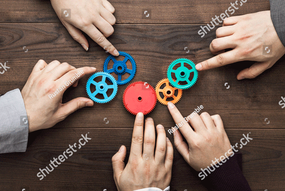
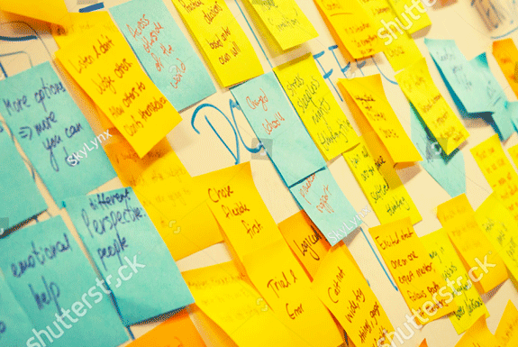

29 set - 23 out 2016
Módulo Aprendizado Centrado no Aluno – Turma 16
place Insper

O curso é fortemente pautado no trabalho colaborativo e na troca de experiência entre os docentes. Tudo isso, juntamente com as atividades de autoestudo, exigirá dedicação de aproximadamente 4h por semana.
11 abr 2017
Workshop de Professores da PGLS - Plano de Aula 1
access_time 8h30 às 12h place Insper – sala Jorge Paulo Lemman – 1º andar

Vamos usar o Design Thinking para cocriar maneiras de motivar nossos alunos?
13 mai 2015
Workshop de Professores – Motivação dos alunos para a aprendizagem
access_time 18h às 21h place Insper

O curso é fortemente pautado no trabalho colaborativo e na troca de experiência entre os docentes. Tudo isso, juntamente com as atividades de autoestudo, exigirá dedicação de aproximadamente 4h por semana.
29 nov 2016
Design Thinking: cocriando maneiras de motivar nossos alunos
access_time 9h às 12h30 place Insper - Sala 405 e 406
Vamos usar o Design Thinking para cocriar maneiras de motivar nossos alunos?
01 ago - 25 set 2017
Módulo Aprendizado Centrado no Aluno – Turma 15
place Insper
O curso é fortemente pautado no trabalho colaborativo e na troca de experiência entre os docentes. Tudo isso, juntamente com as atividades de autoestudo, exigirá dedicação de aproximadamente 4h por semana.
15 out 2016 2014
Workshop de Professores – Combinando motivação extrínseca e intrínseca
access_time 8h30 às 12h place Insper - Sala 405 e 406
O objetivo é apresentar detalhes do Planejamento Estratégico dos próximos cinco anos, para pensarmos em conjunto sobre possíveis desdobramentos e caminhos.